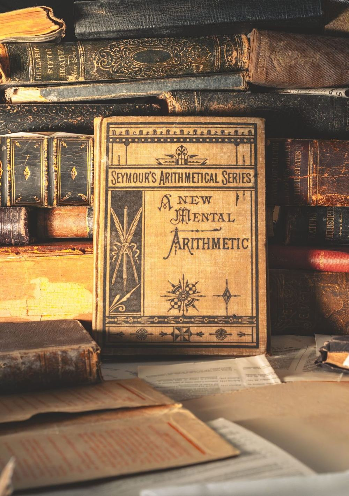
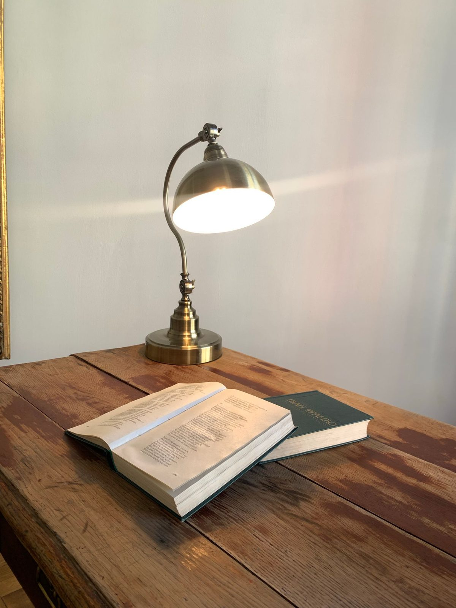

MathBridge
Academy
Mathematics is a language.
 IThe PortraitA written account of how you think
IThe PortraitA written account of how you think
IIThe PrologueEight weeks ahead of the syllabus IIIRead Like a MathematicianTaught one to one, eight weeks
IIIRead Like a MathematicianTaught one to one, eight weeks
IVThe Practice RoomA problem each Monday, a letter each Saturday VEssaysThe Rooted Mathematician
VEssaysThe Rooted MathematicianI am Lerato Molisana, a mathematician and writer. I teach students who already enjoy mathematics and want to go further than a classroom can take them.
I read and reply to everything myself.
Read it · Write it · Think in it